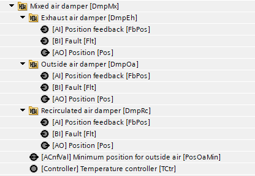
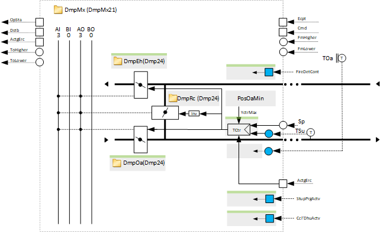
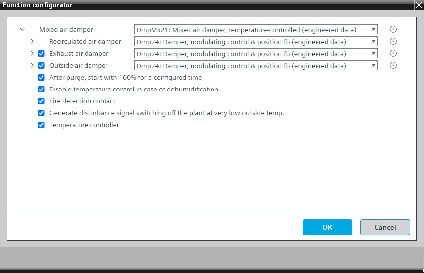

[DmpMx21] 混合空气风门，温度控制
Program block, name / node subtype: [DmpMx21] Mixed air damper, temperature-controlled
Library hierarchy: Ventilation and air conditioning equipment
Family: DmpMx
项目树 | 图表 |
|---|---|
|
 |  |
Configurator


程序块存储在没有 I/Os. 的库中 使用auto-create and auto-connect函数创建 I/Os 和 /or 将它们连接到接口块，例如 R_A、CMD_B。或者，从包含库中预定义 I/Os 的文件夹中取出 I/Os，并从工厂中取出 /or，并将它们连接到接口块。
控制再循环空气风门的位置（以及可选的排气风门和室外空气风门的位置），以支持空气质量控制（使用另一个程序块中的控制器）或执行送风温度控制（可选）。
有一个配置值用于设置外部空气的最小位置。
来自另一个程序块的空气质量控制器的信号优先于来自其温度控制器的信号。如果需要相反，请将程序中现有的MAX8_R更改为MIN8_R。
该程序块具有以下可选功能：
Option: Exhaust air damper (1xAO, 1xAI)
控制排气风门 (Dmp24) 的位置。
Option: Outside air damper (1xAO, 1xAI)
控制排气风门 (Dmp24) 的位置。
Option: After purge, start with 100 % for a configured time
提供“启动净化”功能和逻辑状态的接口，以在“启动净化”功能完成后将再循环空气风门和其他两个可选风门保持在外部空气最小位置一段可配置的时间（例如 4 分钟）。
Option: Disable temperature control in case of dehumidification
提供一个接口（最有可能是冷却盘管）和逻辑，以在除湿时禁用温度控制，以便在冷却盘管执行除湿时不预热空气。
如果该盘管用作再热器，请删除此选项。
Option: Fire detection contact
提供“火灾探测触点”接口（最有可能在空气处理机组工厂的工厂运行模式中）和关闭所有风门的逻辑。
Option: Generate disturbance signal switching off the plant at very low outside temperature
如果混合空气阻尼器在室外温度非常低的情况下出现问题，加热线圈的功率可能会不足，并且产生的送风温度可能会下降到高于防冻保护的水平，但仍然非常令人不舒服。因此，会产生关闭空气处理机组的干扰信号。
Option: Temperature controller
用于控制送风温度的 PID 控制器和逻辑。
温度控制器根据另一个程序块的基于加热或基于冷却的条件动态地改变其控制动作。
姓名 | 描述 | 类型 | 报警/通知类 | 趋势/类型 |
|---|---|---|---|---|
PosOaMin | Minimum position for outside air | ACnfVal: Analog configuration value | No | No |
DmpRc | Recirculated air damper | N/A | N/A |
姓名 | 描述 | 类型 | 报警/通知类 | 趋势/类型 |
|---|---|---|---|---|
DmpOa | Outside air damper | N/A | N/A | |
DmpEh | Exhaust air damper | N/A | N/A | |
TCtr | Temperature controller | Ctr: Controller | N/A | N/A |
描述 |
|---|
|
清除后，以 100 % 开始一段配置的时间。 |
产生干扰信号，在室外温度极低的情况下关闭设备。 |
Disable temperature control in case of dehumidification |
Fire detection contact |
选项“Fire detection contact”读取工厂火灾探测触点的状态，并以更高优先级关闭所有 3 个风门。